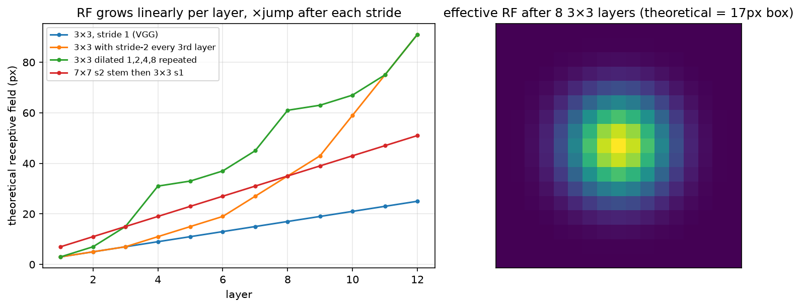

Convolutions¶
Why this matters at staff level. "Implement a convolution layer with the backward pass and verify it against PyTorch" is one of the most common perception coding rounds, and "derive the output size, receptive field and FLOPs of this block" is the most common whiteboard warm-up. Past the round itself, this chapter holds the deployment arithmetic: why a depthwise-separable block is eight or nine times cheaper in MACs, why im2col turns convolution into a GEMM so a tensor core can run it, why transposed convs produce checkerboards, and why dilation buys receptive field for free. Strong signal is deriving all of it, coding im2col forward and backward without help, and knowing which of these facts the TensorRT engineer actually cares about.
TL;DR, the interview card¶
- Output size per axis: \(\boxed{H_{\text{out}} = \left\lfloor \frac{H + 2p - d(k-1) - 1}{s} \right\rfloor + 1}\). "Same" padding for odd \(k\) with \(s = 1\), \(d = 1\) is \(p = (k-1)/2\).
- Receptive field recursion: \(r_l = r_{l-1} + d_l (k_l - 1) j_{l-1}\) and \(j_l = j_{l-1} s_l\), where \(j\) is the jump, the cumulative stride. Three \(3\times3\) layers match one \(7\times7\) in receptive field, at \(27C^2\) parameters against \(49C^2\), and with two extra nonlinearities. The effective receptive field is Gaussian-shaped and much smaller than the theoretical box.
- Cost of a standard conv: MACs \(= H_o W_o C_o C_i k^2\), params \(= C_o C_i k^2\). Depthwise-separable costs \(H_o W_o (C_i k^2 + C_i C_o)\), a ratio of \(1/C_o + 1/k^2\), about \(1/9\) for \(k=3\).
- Conv layers compute correlation. The input-gradient of a correlation is a convolution with the same kernel, which is what transposed conv does in its forward pass. Transposed conv with \(k\) not divisible by \(s\) produces checkerboard artefacts, so use \(k = s\) or resize plus conv.
- im2col unfolds each receptive field into a column, giving
(C_i k², H_o W_o), and the layer becomesW (C_o, C_i k²) @ cols. Backward: \(\partial W = \partial Y \text{cols}^\top\), \(\partial \text{cols} = W^\top \partial Y\), \(\partial X = \text{col2im}(\partial\text{cols})\), where col2im is a scatter-add, the adjoint of the gather. - A \(1\times1\) conv is a per-pixel linear layer, used for channel mixing, bottlenecks, and FPN laterals. Grouped conv splits channels into \(g\) independent convs at \(1/g\) the cost, and depthwise is the case \(g = C\).
- Dilated (atrous) conv with rate \(d\) spans \(d(k-1)+1\) pixels at the cost of \(k^2\), giving receptive field without resolution loss (DeepLab, WaveNet). Rates sharing common factors produce gridding artefacts.
- Winograd \(F(2\times2, 3\times3)\) computes a \(3\times3\) conv with \(2.25\times\) fewer multiplies, and FFT conv wins for large kernels. cuDNN picks per shape, so you rarely choose, but you should know why \(3\times3\) became the sweet spot.
1. Intuition first¶
A \(3\times3\) convolution with one input and one output channel is a small linear function of a \(3\times3\) neighbourhood, slid across the image with the same nine weights everywhere. That one design decision, weight sharing across position, carries the whole chapter. It makes a conv layer translation-equivariant, so shifting the input shifts the output. It makes the parameter count independent of image size. And it lets the layer be written as a single matrix multiply.
Concretely, take a \(4\times4\) single-channel input and a \(3\times3\) kernel, no padding, stride 1. Output positions per axis: \((4 - 3)/1 + 1 = 2\), so a \(2\times2\) output. Output \((0, 0)\) looks at input rows 0 to 2 and columns 0 to 2. Output \((0, 1)\) looks at rows 0 to 2 and columns 1 to 3. Now unfold: write each of those four \(3\times3\) patches as a column of nine numbers, giving a \(9 \times 4\) matrix. The kernel is a \(1\times9\) row. Multiply \(1\times9\) by \(9\times4\) and you get \(1\times4\), the four outputs. That is im2col. With \(C_i\) input channels the columns are \(9C_i\) tall, with \(C_o\) output channels the weight matrix has \(C_o\) rows, and the same multiply produces every channel at every position at once.
The receptive field grows when you stack layers. After one \(3\times3\), each output sees 3 pixels. After two, the second layer's \(3\times3\) window of first-layer outputs spans \(3 + 2 = 5\) input pixels. After three, 7. Once you insert a stride-2 layer, each step in the next layer's window covers 2 input pixels, so the growth per layer doubles. The figure shows this arithmetic for four common stacks, and on the right it shows the effective receptive field: the actual gradient of one output with respect to the input, which after 8 layers of averaging is a Gaussian-ish blob well inside the 17-pixel theoretical box. That shrinkage is a central-limit effect, since the receptive field is a sum of many small random kernels.

Left: theoretical receptive field against layer index for four architectures. Strides and dilations bend the curve upward. Right: the effective receptive field after eight \(3\times3\) layers, where the edge pixels of the theoretical box barely contribute.
2. The math¶
2.1 Output size¶
Pad the axis to length \(H + 2p\). A dilated kernel of size \(k\) and rate \(d\) covers \(k_{\text{eff}} = d(k-1) + 1\) consecutive positions, with taps at \(0, d, 2d, \ldots, (k-1)d\). The first window starts at index 0, and the last window can start at any index \(i\) with \(i + k_{\text{eff}} - 1 \le H + 2p - 1\), so \(i \le H + 2p - k_{\text{eff}}\). With stride \(s\) the valid starts are \(0, s, 2s, \ldots\), so the count is \(\lfloor (H + 2p - k_{\text{eff}})/s \rfloor + 1\):
Three checks. \(k = 3, p = 1, s = 1, d = 1\) gives \(H\), which is "same". \(k = 7, p = 3, s = 2\) on \(224\) gives \(\lfloor 223/2 \rfloor + 1 = 112\), the ResNet stem. \(k=3, p=0, d=2\) on \(10\) gives \(\lfloor(10 - 5)/1\rfloor + 1 = 6\). For transposed conv the formula inverts to \(H_{\text{out}} = (H - 1)s - 2p + k\), plus an output_padding to disambiguate the floor.
2.2 Receptive field¶
Track two quantities per layer: \(r_l\), the input extent one output pixel depends on, and \(j_l\), the input distance between adjacent output pixels. A layer with kernel \(k_l\), stride \(s_l\) and dilation \(d_l\) combines \(k_l\) inputs spaced \(d_l j_{l-1}\) apart, so
with \(r_0 = 1\) and \(j_0 = 1\). Three \(3\times3\) stride-1 layers give \(r = 1 + 2 + 2 + 2 = 7\). A \(7\times7\) stride-2 stem followed by a \(3\times3\) stride-2 gives \(r = 1 + 6 + 2\cdot2 = 11\) and \(j = 4\).
Strides are the cheap way to grow the receptive field, since each halving doubles the growth rate of every later layer. Dilation grows it without losing resolution. A detector's largest-object head has to sit at a stage whose \(r\) exceeds the largest object, which is one reason RetinaNet adds \(P_6\) and \(P_7\).
Luo et al. (NeurIPS 2016, arXiv:1701.04128) showed that the effective receptive field, \(\partial y_{\text{centre}}/\partial x\), is Gaussian-distributed, and that its radius grows as \(O(\sqrt{L})\) rather than \(O(L)\) for stride-1 stacks. The theoretical box overstates what the network sees. Residual connections and downsampling widen the effective field, which is part of why ResNets outperform VGG at the same depth.
2.3 Parameters and FLOPs¶
For a conv with \(C_i\) input channels, \(C_o\) output channels, kernel \(k\), groups \(g\), producing \(H_o \times W_o\):
Every output value is a dot product of length \((C_i/g) k^2\), and there are \(H_o W_o C_o\) of them. A depthwise-separable conv (MobileNet v1) replaces one \(k\times k\) conv by a depthwise \(k\times k\) (with \(g = C_i\), \(C_o = C_i\)) followed by a pointwise \(1\times1\):
For \(k = 3\) and \(C_o \gg 9\) that is about \(1/9\), so eight to nine times fewer multiplies for a small accuracy loss. The catch is arithmetic intensity. The depthwise conv does \(k^2 = 9\) MACs per input element loaded, far below what a GPU needs to be compute-bound, so the wall-clock gain is much smaller than the FLOP gain on GPUs and largest on CPUs and NPUs with narrow SIMD. This is the sharpest "FLOPs are not latency" example in vision.
A ResNet-50 bottleneck (\(1\times1\) from \(C\) to \(C/4\), \(3\times3\) at \(C/4\), \(1\times1\) back to \(C\)) costs \(H_oW_o (C^2/4 + 9C^2/16 + C^2/4) \approx 1.06\, H_oW_o C^2\), against \(18\, H_oW_o C^2\) for two \(3\times3\) convs at width \(C\). The \(17\times\) saving is what makes 50 to 152 layer networks affordable.
2.4 Convolution as a matrix multiply, and its backward pass¶
Let \(\text{cols} = \text{im2col}(X) \in \R^{C_i k^2 \times P}\) with \(P = H_o W_o\), and let \(W \in \R^{C_o \times C_i k^2}\) be the flattened weights. Then
Given \(\partial L/\partial Y =: G \in \R^{C_o \times P}\), ordinary matrix calculus gives
im2col is a linear gather, since each column entry copies one input element, so its adjoint is the corresponding scatter-add: \(\partial L/\partial X = \text{col2im}(W^\top G)\), where overlapping windows accumulate. That accumulation is the whole subtlety of conv backward. A plain assignment instead of an add silently drops the contributions of all but one window, and the test test_im2col_col2im_are_adjoint, which checks \(\langle \text{im2col}(x), c\rangle = \langle x, \text{col2im}(c)\rangle\), catches exactly that bug.
The backward pass for the input is another convolution, with the same kernel spatially flipped, applied to a stride-dilated upstream gradient. That operation is what ConvTranspose2d computes in the forward direction, which is why conv_transpose2d in the code below is literally conv2d_backward called on the input.
2.5 Transposed convolution and checkerboard artefacts¶
A stride-\(s\) transposed conv places a copy of the \(k\times k\) kernel, scaled by the input value, at every \(s\)-th output position, and sums the overlaps. When \(k\) is not a multiple of \(s\), output pixels receive unequal numbers of kernel contributions. For \(k = 3, s = 2\) some pixels get 1 tap and some get 2, which is 1, 2 or 4 in 2-D, and the periodic unevenness appears as a checkerboard even before any training (Odena, Dumoulin and Olah, Distill 2016). The fixes are \(k = s\) (U-Net's ConvTranspose2d(k=2, s=2), no overlap at all), \(k = 4, s = 2\) (uniform overlap), or nearest/bilinear resize followed by a normal conv, which is the resize-conv route used in most modern decoders.
2.6 Winograd and FFT, for literacy¶
Winograd's minimal filtering algorithm \(F(m, r)\) computes \(m\) outputs of an \(r\)-tap 1-D filter with \(m + r - 1\) multiplies instead of \(mr\). For \(F(2\times2, 3\times3)\) the 2-D count is 16 against 36, so \(2.25\times\) fewer multiplies, at the cost of a few additions and a transform of the input tiles and weights (Lavin and Gray, CVPR 2016, arXiv:1509.09308). cuDNN uses it for \(3\times3\) stride-1 convs in FP32 and FP16, which is one reason the \(3\times3\) kernel is so entrenched. Larger tiles such as \(F(4\times4, 3\times3)\) save more multiplies and lose numerical precision, enough to break INT8 accuracy. FFT convolution costs \(O(HW\log HW)\) independent of \(k\) and wins for \(k \gtrsim 11\), which is relevant again now that ConvNeXt and RepLKNet use \(7\times7\) to \(31\times31\) depthwise kernels.
3. Implementation¶
src/mlbook/vision/conv.py has three layers of abstraction. First the arithmetic:
def conv_output_size(n, k, stride=1, pad=0, dilation=1):
effective_k = dilation * (k - 1) + 1
return (n + 2 * pad - effective_k) // stride + 1
def receptive_field(layers): # layers = [(k, s, d), ...]
r, j = 1, 1
for k, s, d in layers:
r = r + d * (k - 1) * j
j = j * s
return r, j
Second, the definition as loops. Read it once, never ship it:
def conv2d_naive(x, w, stride=1, pad=0, dilation=1):
B, C_in, H, W = x.shape
C_out, _, k_h, k_w = w.shape
H_out = conv_output_size(H, k_h, stride, pad, dilation)
W_out = conv_output_size(W, k_w, stride, pad, dilation)
x_pad = np.pad(x, ((0, 0), (0, 0), (pad, pad), (pad, pad))) # (B, C_in, H+2p, W+2p)
out = np.zeros((B, C_out, H_out, W_out), dtype=x.dtype) # (B, C_out, H_out, W_out)
for b in range(B):
for o in range(C_out):
for i in range(H_out):
for j in range(W_out):
rows = i * stride + dilation * np.arange(k_h) # (k_h,) tapped rows
cols = j * stride + dilation * np.arange(k_w) # (k_w,) tapped cols
patch = x_pad[b][:, rows][:, :, cols] # (C_in, k_h, k_w)
out[b, o, i, j] = np.sum(patch * w[o])
return out
Third, im2col. _tap_indices builds, once, the (k_h·k_w, P) arrays of padded-input row and column indices for every (tap, output position) pair. im2col is then a single fancy-index gather, and col2im is its scatter-add via np.add.at:
def im2col(x, k_h, k_w, stride=1, pad=0, dilation=1):
B, C, H, W = x.shape
H_out = conv_output_size(H, k_h, stride, pad, dilation)
W_out = conv_output_size(W, k_w, stride, pad, dilation)
x_pad = np.pad(x, ((0, 0), (0, 0), (pad, pad), (pad, pad))) # (B, C, H+2p, W+2p)
rows, cols = _tap_indices(H_out, W_out, k_h, k_w, stride, dilation) # (k_h·k_w, P) each
cols_mat = x_pad[:, :, rows, cols] # (B, C, k_h·k_w, P) gather
return cols_mat.reshape(B, C * k_h * k_w, H_out * W_out) # (B, C·k_h·k_w, P)
def col2im(cols, x_shape, k_h, k_w, stride, pad, dilation):
B, C, H, W = x_shape
...
x_pad = np.zeros((B, C, H + 2 * pad, W + 2 * pad), dtype=cols.dtype) # (B, C, H+2p, W+2p)
cols4 = cols.reshape(B, C, k_h * k_w, H_out * W_out) # (B, C, k_h·k_w, P)
np.add.at(x_pad, (slice(None), slice(None), rows, cols_idx), cols4) # scatter-ADD, not assign
return x_pad[:, :, pad : pad + H, pad : pad + W] # (B, C, H, W) crop the padding
The forward is one batched GEMM per group. A Python loop over groups keeps the grouped and depthwise cases explicit rather than clever. The backward is the three formulas from §2.4:
def conv2d_im2col(x, w, b=None, stride=1, pad=0, dilation=1, groups=1):
...
for g in range(groups):
x_g = x[:, g * C_in_g : (g + 1) * C_in_g] # (B, C_in/g, H, W)
cols = im2col(x_g, k_h, k_w, stride, pad, dilation) # (B, C_in/g·k_h·k_w, P)
w_mat = w[g * C_out_g : (g + 1) * C_out_g].reshape(C_out_g, -1) # (C_out/g, C_in/g·k_h·k_w)
out[:, g * C_out_g : (g + 1) * C_out_g] = w_mat @ cols # (B, C_out/g, P)
...
return out.reshape(B, C_out, H_out, W_out), cache
def conv2d_backward(dout, w, cache):
...
dout2 = dout.reshape(B, C_out, -1) # (B, C_out, P)
for g in range(groups):
dout_g = dout2[:, g * C_out_g : (g + 1) * C_out_g] # (B, C_out/g, P)
dw_mat = np.einsum("bop,bkp->ok", dout_g, cols) # (C_out/g, K): Σ_b Σ_p dout[b,o,p]·cols[b,k,p]
dcols = w_mat.T @ dout_g # (B, K, P)
dx[:, g * C_in_g : (g + 1) * C_in_g] = col2im(dcols, (B, C_in_g, H, W), k_h, k_w, stride, pad, dilation)
db = dout.sum(axis=(0, 2, 3)) # (C_out,)
return dx, dw, db
The single einsum is the batched \(G\,\text{cols}^\top\) summed over the batch. b is batch, o is output channel, p is output position, k is the unrolled \((c, u, v)\) tap index, and contracting b and p leaves (o, k), the flattened weight gradient. Transposed convolution is then the input-gradient:
def conv_transpose2d(x, w, stride=1, pad=0):
B, C_in, H, W = x.shape; _, C_out, k, _ = w.shape
H_big = (H - 1) * stride - 2 * pad + k; W_big = (W - 1) * stride - 2 * pad + k
dummy = np.zeros((B, C_out, H_big, W_big), dtype=x.dtype) # (B, C_out, H_big, W_big)
_, cache = conv2d_im2col(dummy, w, stride=stride, pad=pad) # forward conv: big to small
dx, _, _ = conv2d_backward(x, w, cache) # treat x as ∂L/∂(small)
return dx # (B, C_out, H_big, W_big)
How you'd test it. Forward, both naive and im2col, against F.conv2d for several (stride, pad, dilation) combinations and for groups=6 depthwise. Backward against torch.autograd for a grouped, strided, padded case, and against central finite differences. conv_transpose2d against F.conv_transpose2d. The adjoint identity for im2col and col2im. And the arithmetic helpers against hand-computed values: \(224 \to 112\) for the ResNet stem, receptive field 7 for three \(3\times3\). Run pytest tests/test_vision_conv.py -q.
Full implementation: src/mlbook/vision/conv.py
"""A convolution layer from scratch (NumPy): naive loops, im2col/GEMM, and backward.
Shapes follow PyTorch: input ``x`` is ``(B, C_in, H, W)``, weight ``w`` is
``(C_out, C_in // groups, k_h, k_w)``, output is ``(B, C_out, H_out, W_out)`` with
H_out = floor((H + 2 p_h - d_h (k_h - 1) - 1) / s_h) + 1.
Every function here is what ``torch.nn.functional.conv2d`` computes (cross-correlation).
"""
from __future__ import annotations
import numpy as np
# ---------------------------------------------------------------------------
# Arithmetic: output size, receptive field, FLOPs, parameters
# ---------------------------------------------------------------------------
def conv_output_size(n: int, k: int, stride: int = 1, pad: int = 0, dilation: int = 1) -> int:
"""``floor((n + 2p − d(k−1) − 1) / s) + 1`` along one spatial axis."""
effective_k = dilation * (k - 1) + 1 # the span the dilated kernel covers
return (n + 2 * pad - effective_k) // stride + 1
def receptive_field(layers: list[tuple[int, int, int]]) -> tuple[int, int]:
"""Theoretical receptive field of a stack of (kernel, stride, dilation) layers.
Recursion (``j`` = jump = product of strides so far, ``r`` = receptive field):
r_{l} = r_{l-1} + (d_l (k_l − 1)) · j_{l-1}, j_l = j_{l-1} · s_l.
Returns:
(r, j) after the last layer, in input pixels.
"""
r, j = 1, 1
for k, s, d in layers:
r = r + d * (k - 1) * j
j = j * s
return r, j
def conv_flops_and_params(
c_in: int, c_out: int, k: int, h_out: int, w_out: int, groups: int = 1, bias: bool = True
) -> tuple[int, int]:
"""Multiply-adds and parameters of a ``k×k`` conv producing ``(c_out, h_out, w_out)``.
MACs = h_out · w_out · c_out · (c_in / groups) · k²
params = c_out · (c_in / groups) · k² (+ c_out for bias)
Depthwise (groups = c_in = c_out) divides both by c_in.
"""
per_output_macs = (c_in // groups) * k * k
macs = h_out * w_out * c_out * per_output_macs
params = c_out * per_output_macs + (c_out if bias else 0)
return macs, params
def depthwise_separable_flops(c_in: int, c_out: int, k: int, h_out: int, w_out: int) -> tuple[int, int]:
"""MACs of ``k×k`` depthwise + ``1×1`` pointwise, and of the equivalent standard conv.
Ratio ≈ 1/c_out + 1/k² (MobileNet v1, eq. 5).
"""
depthwise, _ = conv_flops_and_params(c_in, c_in, k, h_out, w_out, groups=c_in, bias=False)
pointwise, _ = conv_flops_and_params(c_in, c_out, 1, h_out, w_out, bias=False)
standard, _ = conv_flops_and_params(c_in, c_out, k, h_out, w_out, bias=False)
return depthwise + pointwise, standard
# ---------------------------------------------------------------------------
# Naive forward — the definition, for reading
# ---------------------------------------------------------------------------
def conv2d_naive(x: np.ndarray, w: np.ndarray, stride: int = 1, pad: int = 0, dilation: int = 1) -> np.ndarray:
"""Cross-correlation by explicit loops (groups=1). For understanding, not speed.
``out[b, o, i, j] = Σ_{c,u,v} x_pad[b, c, i·s + u·d, j·s + v·d] · w[o, c, u, v]``
Args:
x: (B, C_in, H, W). w: (C_out, C_in, k_h, k_w).
Returns:
(B, C_out, H_out, W_out).
"""
B, C_in, H, W = x.shape
C_out, _, k_h, k_w = w.shape
H_out = conv_output_size(H, k_h, stride, pad, dilation)
W_out = conv_output_size(W, k_w, stride, pad, dilation)
x_pad = np.pad(x, ((0, 0), (0, 0), (pad, pad), (pad, pad))) # (B, C_in, H+2p, W+2p)
out = np.zeros((B, C_out, H_out, W_out), dtype=x.dtype) # (B, C_out, H_out, W_out)
for b in range(B):
for o in range(C_out):
for i in range(H_out):
for j in range(W_out):
rows = i * stride + dilation * np.arange(k_h) # (k_h,) input rows tapped
cols = j * stride + dilation * np.arange(k_w) # (k_w,) input cols tapped
patch = x_pad[b][:, rows][:, :, cols] # (C_in, k_h, k_w)
out[b, o, i, j] = np.sum(patch * w[o])
return out
# ---------------------------------------------------------------------------
# im2col: convolution as one matrix multiply
# ---------------------------------------------------------------------------
def _tap_indices(H_out: int, W_out: int, k_h: int, k_w: int, stride: int, dilation: int):
"""Row/col indices of every (output position, kernel tap) pair.
Returns:
rows, cols: each (k_h·k_w, H_out·W_out) int arrays into the padded input.
"""
u, v = np.meshgrid(np.arange(k_h), np.arange(k_w), indexing="ij") # each (k_h, k_w)
i, j = np.meshgrid(np.arange(H_out), np.arange(W_out), indexing="ij") # each (H_out, W_out)
rows = i.reshape(1, -1) * stride + u.reshape(-1, 1) * dilation # (k_h·k_w, H_out·W_out)
cols = j.reshape(1, -1) * stride + v.reshape(-1, 1) * dilation # (k_h·k_w, H_out·W_out)
return rows, cols
def im2col(x: np.ndarray, k_h: int, k_w: int, stride: int = 1, pad: int = 0, dilation: int = 1) -> np.ndarray:
"""Unfold every receptive field into a column (``torch.nn.Unfold``).
Args:
x: (B, C, H, W).
Returns:
(B, C·k_h·k_w, H_out·W_out) — column ``p`` holds the patch under output position ``p``,
ordered ``(c, u, v)`` to match ``w.reshape(C_out, -1)``.
"""
B, C, H, W = x.shape
H_out = conv_output_size(H, k_h, stride, pad, dilation)
W_out = conv_output_size(W, k_w, stride, pad, dilation)
x_pad = np.pad(x, ((0, 0), (0, 0), (pad, pad), (pad, pad))) # (B, C, H+2p, W+2p)
rows, cols = _tap_indices(H_out, W_out, k_h, k_w, stride, dilation) # (k_h·k_w, P) each
cols_mat = x_pad[:, :, rows, cols] # (B, C, k_h·k_w, P) fancy-index gather
return cols_mat.reshape(B, C * k_h * k_w, H_out * W_out) # (B, C·k_h·k_w, P)
def col2im(
cols: np.ndarray, x_shape: tuple[int, int, int, int], k_h: int, k_w: int, stride: int, pad: int, dilation: int
) -> np.ndarray:
"""Adjoint of :func:`im2col`: scatter-*add* columns back to image positions (``torch.nn.Fold``).
Overlapping patches accumulate, which is exactly what the gradient w.r.t. the input needs.
Args:
cols: (B, C·k_h·k_w, H_out·W_out).
Returns:
(B, C, H, W) — padding rows/cols are cropped away.
"""
B, C, H, W = x_shape
H_out = conv_output_size(H, k_h, stride, pad, dilation)
W_out = conv_output_size(W, k_w, stride, pad, dilation)
rows, cols_idx = _tap_indices(H_out, W_out, k_h, k_w, stride, dilation) # (k_h·k_w, P)
x_pad = np.zeros((B, C, H + 2 * pad, W + 2 * pad), dtype=cols.dtype) # (B, C, H+2p, W+2p)
cols4 = cols.reshape(B, C, k_h * k_w, H_out * W_out) # (B, C, k_h·k_w, P)
# np.add.at accumulates duplicates (plain fancy-index assignment would not)
np.add.at(x_pad, (slice(None), slice(None), rows, cols_idx), cols4)
return x_pad[:, :, pad : pad + H, pad : pad + W] # (B, C, H, W)
def conv2d_im2col(
x: np.ndarray, w: np.ndarray, b: np.ndarray | None = None, stride: int = 1, pad: int = 0, dilation: int = 1, groups: int = 1
) -> tuple[np.ndarray, tuple]:
"""Forward pass as a GEMM per group: ``out_g = W_g @ cols_g``.
Args:
x: (B, C_in, H, W). w: (C_out, C_in/groups, k_h, k_w). b: (C_out,) or None.
Returns:
out: (B, C_out, H_out, W_out) and a cache for :func:`conv2d_backward`.
"""
B, C_in, H, W = x.shape
C_out, C_in_g, k_h, k_w = w.shape
H_out = conv_output_size(H, k_h, stride, pad, dilation)
W_out = conv_output_size(W, k_w, stride, pad, dilation)
C_out_g = C_out // groups
out = np.empty((B, C_out, H_out * W_out), dtype=x.dtype) # (B, C_out, P)
cols_per_group = []
for g in range(groups):
x_g = x[:, g * C_in_g : (g + 1) * C_in_g] # (B, C_in/g, H, W)
cols = im2col(x_g, k_h, k_w, stride, pad, dilation) # (B, C_in/g·k_h·k_w, P)
w_mat = w[g * C_out_g : (g + 1) * C_out_g].reshape(C_out_g, -1) # (C_out/g, C_in/g·k_h·k_w)
out[:, g * C_out_g : (g + 1) * C_out_g] = w_mat @ cols # (B, C_out/g, P) batched GEMM
cols_per_group.append(cols)
if b is not None:
out += b[None, :, None] # broadcast (C_out,) over batch and positions
out = out.reshape(B, C_out, H_out, W_out) # (B, C_out, H_out, W_out)
cache = (x.shape, w.shape, cols_per_group, stride, pad, dilation, groups)
return out, cache
def conv2d_backward(dout: np.ndarray, w: np.ndarray, cache: tuple) -> tuple[np.ndarray, np.ndarray, np.ndarray]:
"""Gradients of ``L`` w.r.t. input, weight and bias given ``dout = ∂L/∂out``.
With ``out = W @ cols``: ``∂L/∂W = dout @ colsᵀ``, ``∂L/∂cols = Wᵀ @ dout``,
then ``∂L/∂x = col2im(∂L/∂cols)`` (the scatter-add is the adjoint of the gather).
Args:
dout: (B, C_out, H_out, W_out).
Returns:
dx (B, C_in, H, W), dw (C_out, C_in/groups, k_h, k_w), db (C_out,).
"""
x_shape, w_shape, cols_per_group, stride, pad, dilation, groups = cache
B, C_in, H, W = x_shape
C_out, C_in_g, k_h, k_w = w_shape
C_out_g = C_out // groups
dout2 = dout.reshape(B, C_out, -1) # (B, C_out, P)
dx = np.zeros(x_shape, dtype=dout.dtype) # (B, C_in, H, W)
dw = np.zeros(w_shape, dtype=dout.dtype) # (C_out, C_in/g, k_h, k_w)
for g in range(groups):
dout_g = dout2[:, g * C_out_g : (g + 1) * C_out_g] # (B, C_out/g, P)
cols = cols_per_group[g] # (B, C_in/g·k_h·k_w, P)
w_mat = w[g * C_out_g : (g + 1) * C_out_g].reshape(C_out_g, -1) # (C_out/g, C_in/g·k_h·k_w)
dw_mat = np.einsum("bop,bkp->ok", dout_g, cols) # (C_out/g, C_in/g·k_h·k_w): sum over batch b and positions p of dout[b,o,p]·cols[b,k,p]
dw[g * C_out_g : (g + 1) * C_out_g] = dw_mat.reshape(C_out_g, C_in_g, k_h, k_w)
dcols = w_mat.T @ dout_g # (B, C_in/g·k_h·k_w, P)
dx[:, g * C_in_g : (g + 1) * C_in_g] = col2im(
dcols, (B, C_in_g, H, W), k_h, k_w, stride, pad, dilation
) # (B, C_in/g, H, W)
db = dout.sum(axis=(0, 2, 3)) # (C_out,)
return dx, dw, db
def conv_transpose2d(x: np.ndarray, w: np.ndarray, stride: int = 1, pad: int = 0) -> np.ndarray:
"""Transposed convolution = the input-gradient of a conv with the same weights.
Args:
x: (B, C_in, H, W) — plays the role of ``dout`` of the forward conv.
w: (C_in, C_out, k, k) — PyTorch's ``ConvTranspose2d`` weight layout.
Returns:
(B, C_out, (H−1)·s − 2p + k, (W−1)·s − 2p + k).
"""
B, C_in, H, W = x.shape
_, C_out, k, _ = w.shape
H_big = (H - 1) * stride - 2 * pad + k
W_big = (W - 1) * stride - 2 * pad + k
# a conv with weight (C_in, C_out, k, k) mapping (B, C_out, H_big, W_big) -> (B, C_in, H, W)
w_fwd = w # (C_in, C_out, k, k) already in "forward conv" layout for that direction
dummy = np.zeros((B, C_out, H_big, W_big), dtype=x.dtype) # (B, C_out, H_big, W_big)
_, cache = conv2d_im2col(dummy, w_fwd, stride=stride, pad=pad)
dx, _, _ = conv2d_backward(x, w_fwd, cache) # (B, C_out, H_big, W_big)
return dx
Retype by hand¶
Symbol (file src/mlbook/vision/conv.py) |
Reproduce from memory? | Test |
|---|---|---|
conv_output_size, receptive_field |
Yes, these are whiteboard warm-ups | test_output_size_and_receptive_field |
conv_flops_and_params, depthwise_separable_flops |
Yes, at least the formulas | test_flops_depthwise_separable_ratio |
conv2d_naive |
Yes. The definition, about 15 lines | test_naive_and_im2col_match_torch_forward |
im2col, col2im, conv2d_im2col |
Yes. This is the coding-round core | test_naive_and_im2col_match_torch_forward, test_grouped_and_depthwise_forward, test_im2col_col2im_are_adjoint |
conv2d_backward |
Yes. Three gradient formulas plus the scatter-add | test_backward_matches_torch_autograd, test_backward_finite_difference |
conv_transpose2d |
Read it, and be able to explain that it is the input-gradient | test_transposed_conv_matches_torch |
Check with pytest tests/test_vision_conv.py -q. Target time: output size, receptive field and FLOPs, 10 minutes. Naive conv, 10 minutes. im2col forward and backward verified against F.conv2d, 35 minutes.
4. Systems view: cost, failure modes, trade-offs¶
im2col materialises a (C_i k², H_o W_o) matrix, which is \(k^2\) times the input size. For a \(3\times3\) on a \(256 \times 56 \times 56\) activation in FP16 that is \(9 \times 1.6\) MB, about 14 MB per image per layer. cuDNN's implicit-GEMM algorithms compute the gather on the fly to avoid it, and Winograd and FFT need their own workspaces. That is why torch.backends.cudnn.benchmark = True matters: the fastest algorithm depends on shape and on available workspace.
Arithmetic intensity decides whether the FLOP savings show up in wall clock. A standard \(3\times3\) conv at width 256 does \(9 \cdot 256 = 2304\) MACs per input element. A depthwise \(3\times3\) does 9. On an A100, which needs roughly 300 FLOP per byte to be compute-bound in FP16, the depthwise conv is deeply memory-bound and runs at a small fraction of peak. MobileNet-style blocks deliver their FLOP savings on phones and edge NPUs far more than in a datacentre. See hardware and roofline.
| Symptom | Cause | Fix |
|---|---|---|
| Checkerboard texture in generated images or upsampled masks | transposed conv with \(k \bmod s \ne 0\) | \(k = s\), \(k = 2s\), or resize plus conv |
| Gridding, where features respond only to every \(d\)-th pixel | stacked dilated convs with the same rate | hybrid rates such as (1, 2, 5), or ASPP-style parallel rates |
| Dead border predictions | zero padding tells the net where the edge is, and the receptive field is large relative to the image | reflect padding for low-level filters; accept it higher up, since nets exploit padding as position information |
| Depthwise model slower than FLOPs predict | memory-bound kernels, poor fusion | fuse depthwise with BN and activation, use channels-last, profile instead of counting FLOPs |
| INT8 accuracy drop concentrated in depthwise layers | per-tensor quantisation of channels with very different ranges | per-channel weight quantisation, and avoid Winograd in INT8 |
Choosing between the variants:
| Goal | Choice | Decision rule |
|---|---|---|
| Grow receptive field cheaply, resolution not needed | stride 2, with BlurPool | classification, backbone stages |
| Grow receptive field, keep resolution | dilation | dense prediction (segmentation, depth) at output stride 8 to 16 |
| Cut FLOPs for edge deployment | depthwise-separable or grouped | CPU and NPU targets, and check latency rather than FLOPs |
| Mix channels without spatial context | \(1\times1\) conv | bottlenecks, laterals, heads |
| Upsample in a decoder | resize plus \(3\times3\) conv, or ConvTranspose(k=s) |
avoid \(k = 3, s = 2\) transposed conv |
| Very large kernels, \(k \ge 7\) | depthwise large kernel (ConvNeXt, RepLKNet) | FFT and implicit-GEMM keep it affordable, and pair it with \(1\times1\) mixing |
5. In production¶
Google: MobileNet's depthwise-separable convolution for on-device vision
Howard et al., "MobileNets: Efficient Convolutional Neural Networks for Mobile Vision Applications" (2017, arXiv:1704.04861) built an ImageNet backbone entirely from depthwise-separable blocks and derived the \(1/C_o + 1/k^2\) cost ratio as equation 5 of the paper. The rejected alternative was shrinking a standard network by using fewer channels and lower resolution, which loses accuracy faster than factorising the convolution does. MobileNet's width and resolution multipliers were then added on top for a tunable latency-accuracy curve. It became the default on-device backbone in Google products and in TensorFlow Lite examples. MobileNetV2 (arXiv:1801.04381) added inverted residuals and linear bottlenecks, and V3 (arXiv:1905.02244) searched the block layout against Pixel CPU latency. See CNN architectures.
NVIDIA: TensorRT chooses the convolution algorithm per layer
TensorRT's builder times every eligible kernel implementation (implicit GEMM, Winograd, FFT, direct) for each layer's exact shape and precision, bakes the winner into the engine, and fuses conv with bias and activation, plus following pointwise ops where it can. The practical answer to "which algorithm is fastest" is that it depends on \(k\), stride, channel count, batch and precision, so you measure rather than reason. Source: NVIDIA TensorRT Developer Guide (search "TensorRT builder tactics layer fusion"). The trade-off is a build that takes minutes per model, in exchange for a shape-specialised engine.
Meta: ConvNeXt's 7×7 depthwise kernels
Liu et al., "A ConvNet for the 2020s" (CVPR 2022, arXiv:2201.03545) moved the ResNet's \(3\times3\) conv to a \(7\times7\) depthwise conv placed before the \(1\times1\) expansion, mirroring a Transformer block's attention-then-MLP order. Larger kernels were affordable only because they were depthwise, and the paper reports that going beyond \(7\times7\) saturates. This is the modern datapoint for the large-kernel, cheap-channel-wise trade-off, and it is why FFT and implicit-GEMM depthwise kernels matter again.
Distill: checkerboard artefacts and the resize-conv fix
Odena, Dumoulin and Olah, "Deconvolution and Checkerboard Artifacts" (Distill, 2016) traced the periodic artefacts in GAN and super-resolution outputs to uneven overlap in stride-2 transposed convolutions with \(3\times3\) or \(5\times5\) kernels, and showed that nearest-neighbour resize followed by a standard conv removes them. Most modern decoders, in segmentation and in diffusion U-Nets, use resize plus conv or PixelShuffle for this reason.
6. Interview questions and strong answers¶
Derive the output size of a conv with kernel k, stride s, padding p, dilation d.
The dilated kernel spans \(d(k-1) + 1\) positions. On a padded axis of length \(H + 2p\) the last valid window start is \(H + 2p - (d(k-1)+1)\), and with starts at multiples of \(s\) there are \(\lfloor (H + 2p - d(k-1) - 1)/s \rfloor + 1\) of them. Check it on \(224\) with \(k=7, s=2, p=3\), which gives \(112\).
Staff follow-up: Why does PyTorch need output_padding for transposed conv? The floor makes the forward map many-to-one in sizes. Both 7 and 8 map to 4 with \(k = 3, s = 2, p = 1\), so output_padding picks which preimage you meant.
Why is convolution a matrix multiply, and what does that buy you?
Unfold every receptive field into a column with im2col, and the layer is \(W \in \R^{C_o \times C_i k^2}\) times \(\text{cols} \in \R^{C_i k^2 \times H_oW_o}\). A GEMM has high arithmetic intensity and mature tensor-core-accelerated kernels. The cost is materialising cols, at \(k^2\) times the input memory, which implicit-GEMM kernels avoid by generating the gather addresses on the fly. The backward is two more GEMMs plus a scatter-add. Staff follow-up: What is the adjoint of im2col, and why must it add? Each input element appears in up to \(k^2/s^2\) columns, so the gradient with respect to that element is the sum of the gradients of all its copies. col2im has to accumulate, and the adjoint test catches the version that assigns instead.
Compare the cost of a standard 3×3 conv and a depthwise-separable one. Is the speed-up real?
The ratio is \(1/C_o + 1/k^2 \approx 1/9\) in MACs and roughly the same in parameters. On a phone CPU or an NPU with narrow vector units, most of it is realised. On a datacentre GPU the depthwise conv is memory-bound at 9 MACs per element loaded, so the wall-clock gain is far smaller, and a wide ResNet often runs faster than a MobileNet with fewer FLOPs. The metric that decides is measured latency on the target at the production batch size. Staff follow-up: How do you regain intensity in a depthwise block? Fuse depthwise with BN and activation into one kernel, use channels-last so each channel's spatial plane is contiguous, and pick the expansion ratio so the \(1\times1\) convs dominate compute.
Receptive field of ResNet-50. How would you estimate it, and does it matter?
Apply the recursion stage by stage. Stem \(7\times7\) s2 gives \(r = 7\), \(j = 2\). Maxpool \(3\times3\) s2 gives \(r = 11\), \(j = 4\). Then each \(3\times3\) conv at stage jump \(j\) adds \(2j\). Summing over the 16 bottlenecks' \(3\times3\) convs at jumps 4, 8, 16 and 32 puts the theoretical \(r\) in the hundreds of pixels, larger than a \(224\) input. The effective receptive field is much smaller and Gaussian, which is why context beyond about 100 px barely influences a prediction, and why detectors add FPN top-down paths, dilation or attention for large objects. Staff follow-up: A detector misses very large objects, over 60% of the image. Which knob? Add higher pyramid levels (\(P_6\) and \(P_7\) via stride-2 convs), use dilated convs in the last stage, or add global context such as attention or a GAP broadcast as in ParseNet. All three increase the effective receptive field. Adding more \(3\times3\) layers barely does.
Why do transposed convolutions produce checkerboard artefacts, and how do you avoid them?
With stride \(s\) and kernel \(k\), each output pixel is covered by a number of kernel taps that depends on its position modulo \(s\), unless \(s\) divides \(k\). The uneven coverage is a fixed periodic pattern that the network has to learn to cancel, and it rarely cancels perfectly. Use \(k = s\) for no overlap, \(k = 2s\) for uniform overlap, or upsample with a fixed interpolation and follow with a normal conv. Staff follow-up: Is bilinear-upsample plus conv strictly better? It removes the artefact, and it makes upsampling a fixed low-pass, which can over-smooth. PixelShuffle (sub-pixel conv) keeps learnability, and with ICNR initialisation it avoids the checkerboard at init.
You have to run a 1×1 conv on a (B, 256, 64, 64) tensor. What is it, really, and what is the fastest way to run it?
A \(1\times1\) conv is a per-pixel linear map. Reshape to \((B \cdot 4096, 256)\) and multiply by \(W^\top \in \R^{256\times C_o}\), with no im2col, because it is already a GEMM. In channels-last memory layout the reshape is free, and in channels-first it is a transpose. This is also why \(1\times1\) convs dominate the FLOPs of bottleneck and inverted-residual nets while being the cheapest layers per FLOP.
7. Exercises¶
-
★ Compute the parameter count and MACs at \(56\times56\) resolution for (a) a \(3\times3\) conv from 64 to 128 channels, (b) a depthwise-separable version, (c) a bottleneck \(256 \to 64 \to 64 \to 256\). Check with
conv_flops_and_params.Solution
(a) params \(128 \cdot 64 \cdot 9 + 128 = 73{,}856\), MACs \(56^2 \cdot 128 \cdot 64 \cdot 9 \approx 231\) M. (b) depthwise is \(64 \cdot 9 = 576\) params and \(56^2 \cdot 576 \approx 1.8\) M MACs; pointwise is \(64 \cdot 128 = 8{,}192\) params and \(56^2 \cdot 8192 \approx 25.7\) M MACs; total about 27.5 M MACs, a ratio of \(0.119 = 1/128 + 1/9\). (c) \(1\times1\): 16 K params, 51 M MACs; \(3\times3\): 37 K, 116 M; \(1\times1\): 16 K, 51 M. Total about 69 K params and 218 M MACs, so about the same MACs as (a) while operating at width 256.
-
★★ (coding) Write
receptive_field_resnet50()that lists the (kernel, stride, dilation) sequence of ResNet-50 (stem, maxpool, and the \(3\times3\) conv of each bottleneck, with 3, 4, 6, 3 blocks and stride 2 at the first block of stages 2 to 4) and returns the theoretical receptive field at the end of each stage. Check that the jump is 32 at the end.Solution
The \(1\times1\) convs do not change \(r\). The theoretical receptive field at C5 is 483 px, more than twice a 224 px input, while the effective field is a fraction of that.from mlbook.vision.conv import receptive_field layers = [(7, 2, 1), (3, 2, 1)] out = {} for stage, (n, s) in enumerate([(3, 1), (4, 2), (6, 2), (3, 2)], start=1): for i in range(n): layers.append((3, s if i == 0 else 1, 1)) out[f"C{stage+1}"] = receptive_field(layers) # {'C2': (35, 4), 'C3': (99, 8), 'C4': (291, 16), 'C5': (483, 32)} -
★★ Show that a stride-2 transposed conv with a \(3\times3\) kernel gives output pixels receiving either 1, 2 or 4 kernel contributions depending on parity, and that a \(4\times4\) kernel gives exactly 4 everywhere. Verify numerically with
conv_transpose2don an all-ones input and all-ones kernel, ignoring the border.Solution
Output index \(o\) receives contributions from inputs \(i\) with \(o = 2i + t\) for \(t \in \{0, \ldots, k-1\}\). For \(k = 3\), even \(o\) can come from \(t \in \{0, 2\}\), so 2 inputs, and odd \(o\) from \(t = 1\), so 1 input; in 2-D the counts multiply to 1, 2 or 4. For \(k = 4\), either \(t \in \{0, 2\}\) or \(t \in \{1, 3\}\), so 2 inputs for every parity and 4 in 2-D. Running
conv_transpose2d(np.ones((1,1,6,6)), np.ones((1,1,3,3)), stride=2)gives interior values alternating 1, 2 and 4, while a \(4\times4\) kernel gives a constant 4 in the interior. -
★★★ (coding) Add
groupssupport toconv2d_naive, then verify thatconv2d_backwardalready handles dilation by comparing withtorch.autogradfordilation=2, stride=2, pad=2, groups=2. Then implementconv2d_fft(x, w)for stride 1 usingnp.fft.rfft2with zero padding, compare withF.conv2d(padding=k//2), and explain the difference between circular and linear convolution.Solution
For the grouped naive conv, slice
x_pad[b][g*C_in_g:(g+1)*C_in_g]andw[o]foroin groupg. The im2col backward already handles dilation, andtest_backward_matches_torch_autogradextended withdilation=2, pad=2passes unchanged. For the FFT version, pad both image and flipped kernel to \((H + k - 1, W + k - 1)\), multiply spectra, inverse-transform, and crop the centre \(H \times W\). Without that padding the FFT computes circular convolution, so the kernel wraps around the image edges. Zero-padding to the linear-convolution length puts the wrap-around in the margin you discard. -
★★★ A colleague replaces every \(3\times3\) conv in a ResNet-50 by a \(5\times5\) depthwise plus \(1\times1\) pair, to get more receptive field for fewer FLOPs. Predict (a) the FLOP change, (b) the GPU latency change, (c) the INT8 quantisation risk, and (d) what you would measure before agreeing.
Solution
(a) At width \(C\) the \(3\times3\) costs \(9C^2\) per pixel, while \(5\times5\) depthwise plus \(1\times1\) costs \(25C + C^2 \approx C^2\), so roughly \(9\times\) fewer MACs. (b) The depthwise conv is memory-bound and the \(1\times1\) is a GEMM, so on an A100 you might see 1.5 to 2× lower latency, not 9×, and possibly a regression at small batch sizes. (c) Depthwise layers have per-channel ranges that vary widely, so per-tensor INT8 loses accuracy; require per-channel quantisation and re-run calibration. (d) Measure accuracy after retraining rather than fine-tuning, because the block changed; latency on the target device at the production batch size and precision; and INT8 accuracy. Compare against using a ConvNeXt-style \(7\times7\) depthwise block, which is the known-good version of this idea.
References¶
- V. Dumoulin and F. Visin, "A guide to convolution arithmetic for deep learning", 2016, arXiv:1603.07285.
- W. Luo et al., "Understanding the Effective Receptive Field in Deep Convolutional Neural Networks", NeurIPS 2016, arXiv:1701.04128.
- A. Howard et al., "MobileNets: Efficient Convolutional Neural Networks for Mobile Vision Applications", 2017, arXiv:1704.04861.
- A. Lavin and S. Gray, "Fast Algorithms for Convolutional Neural Networks", CVPR 2016, arXiv:1509.09308.
- A. Odena, V. Dumoulin, C. Olah, "Deconvolution and Checkerboard Artifacts", Distill, 2016. distill.pub
- F. Yu and V. Koltun, "Multi-Scale Context Aggregation by Dilated Convolutions", ICLR 2016, arXiv:1511.07122.
- Z. Liu et al., "A ConvNet for the 2020s", CVPR 2022, arXiv:2201.03545.
- K. Chellapilla, S. Puri, P. Simard, "High Performance Convolutional Neural Networks for Document Processing", 2006, the original im2col-as-GEMM formulation.
- NVIDIA, TensorRT Developer Guide, on builder tactics and layer fusion. docs.nvidia.com